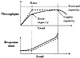
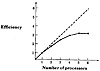

){kind=link}
){kind=link}
){kind=link}
){kind=link}
)
FIGURE 3.5 Types of metrics.
| Previous | Table of Contents | Next |
The response time of a system generally increases as the load on the system increases. The ratio of response time at a particular load to that at the minimum load is called the stretch factor. For a timesharing system, for example, the stretch factor is defined as the ratio of the response time with multiprogramming to that without multiprogramming.
Throughput is defined as the rate (requests per unit of time) at which the requests can be serviced by the system. For batch streams, the throughput is measured in jobs per second. For interactive systems, the throughput is measured in requests per second. For CPUs, the throughput is measured in Millions of Instructions Per Second (MIPS), or Millions of Floating-Point Operations Per Second (MFLOPS). For networks, the throughput is measured in packets per second (pps) or bits per second (bps). For transactions processing systems, the throughput is measured in Transactions Per Second (TPS).
The throughput of a system generally increases as the load on the system initially increases. After a certain load, the throughput stops increasing; in most cases, it may even start decreasing, as shown in Figure 3.3. The maximum achievable throughput under ideal workload conditions is called nominal capacity of the system. For computer networks, the nominal capacity is called the bandwidth and is usually expressed in bits per second. Often the response time at maximum throughput is too high to be acceptable. In such cases, it is more interesting to know the maximum throughput achievable without exceeding a prespecified response time limit. This may be called the usable capacity of the system. In many applications, the knee of the throughput or the response-time curve is considered the optimal operating point. As shown in Figure 3.3, this is the point beyond which the response time increases rapidly as a function of the load but the gain in throughput is small. Before the knee, the response time does not increase significantly but the throughput rises as the load increases. The throughput at the knee is called the knee capacity of the system. It is also common to measure capacity in terms of load, for example, the number of users rather than the throughput. Once again, it is a good idea to precisely define the metrics and their units before using them in a performance evaluation project.

FIGURE 3.3 Capacity of a system.
The ratio of maximum achievable throughput (usable capacity) to nominal capacity is called the efficiency. For example, if the maximum throughput from a 100-Mbps (megabits per second) Local Area Network (LAN) is only 85 Mbps, its efficiency is 85%. The term efficiency is also used for multiprocessor systems. The ratio of the performance of an n-processor system to that of a one-processor system is its efficiency, as shown in Figure 3.4. The performance is usually measured in terms of MIPS or MFLOPS.
The utilization of a resource is measured as the fraction of time the resource is busy servicing requests. Thus this is the ratio of busy time and total elapsed time over a given period. The period during which a resource is not being used is called the idle time. System managers are often interested in balancing the load so that no one resource is utilized more than others. Of course, this is not always possible.
Some resources, such as processors, are always either busy or idle, so their utilization in terms of ratio of busy time to total time makes sense. For other resources, such as memory, only a fraction of the resource may be used at a given time; their utilization is measured as the average fraction used over an interval.

FIGURE 3.4 Efficiency of a multiprocessor system.
The reliability of a system is usually measured by the probability of errors or by the mean time between errors. The latter is often specified as error-free seconds.
The availability of a system is defined as the fraction of the time the system is available to service users’ requests. The time during which the system is not available is called downtime; the time during which the system is available is called uptime. Often the mean uptime, better known as the Mean Time To Failure (MTTF), is a better indicator since a small downtime and a small uptime combination may result in a high-availability measure, but the users may not be able to get any service if the uptime is less than the time required to complete a service.
In system procurement studies, the cost/performance ratio is commonly used as a metric for comparing two or more systems. The cost includes the cost of hardware/software licensing, installation, and maintenance over a given number of years. The performance is measured in terms of throughput under a given response time constraint. For example, two transaction processing systems may be compared in terms of dollars per TPS.
Depending upon the utility function of a performance metric, it can be categorized into three classes:
Figure 3.5 shows hypothetical graphs of utility of the three classes of metrics. The utility class of a metric is useful in data presentation, for example, in Kiviat graphs discussed later in Section 10.6.
FIGURE 3.5 Types of metrics.
One problem performance analysts are faced with repeatedly is that of specifying performance requirements for a system to be acquired or designed. A general method to specify such requirements is presented in this section and is illustrated with a case study.
| Previous | Table of Contents | Next |
){kind=link}